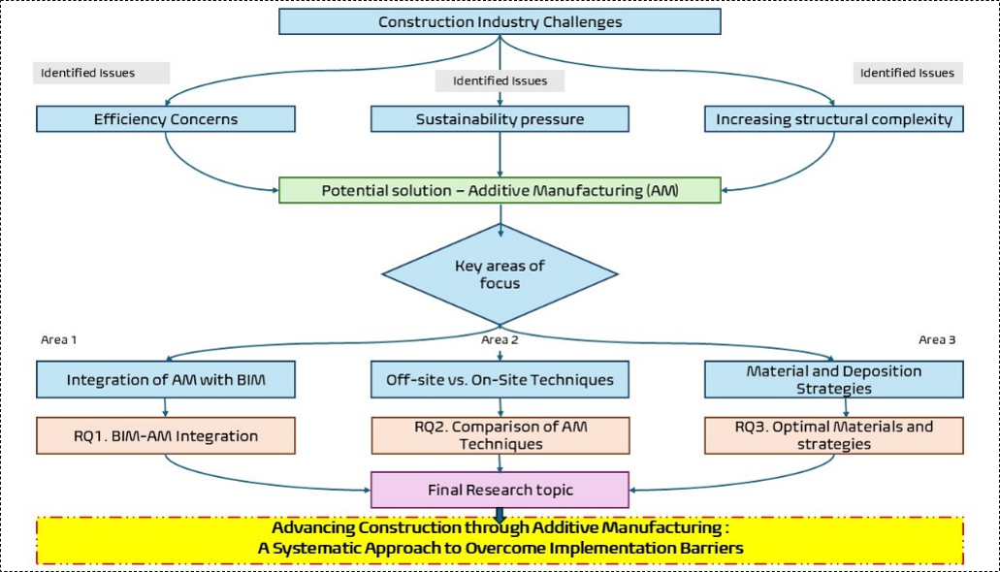
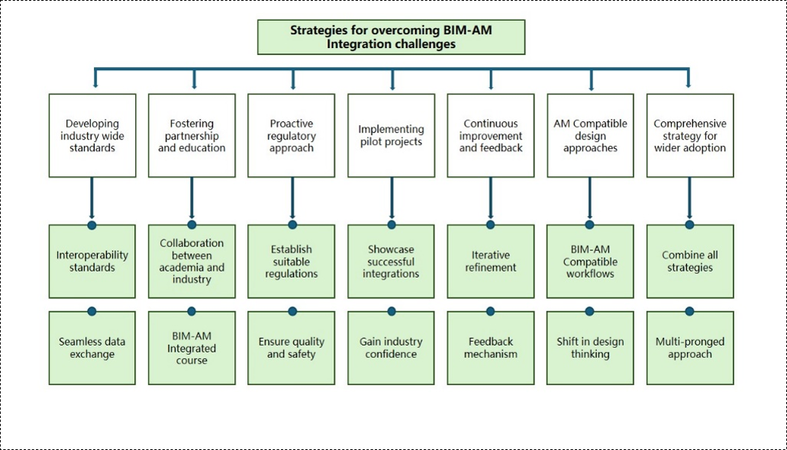
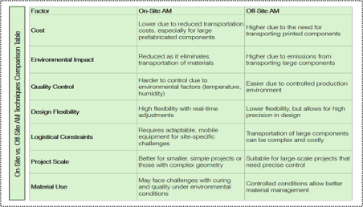
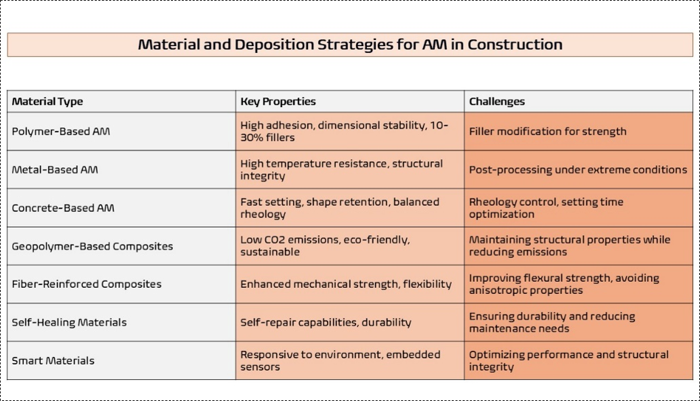
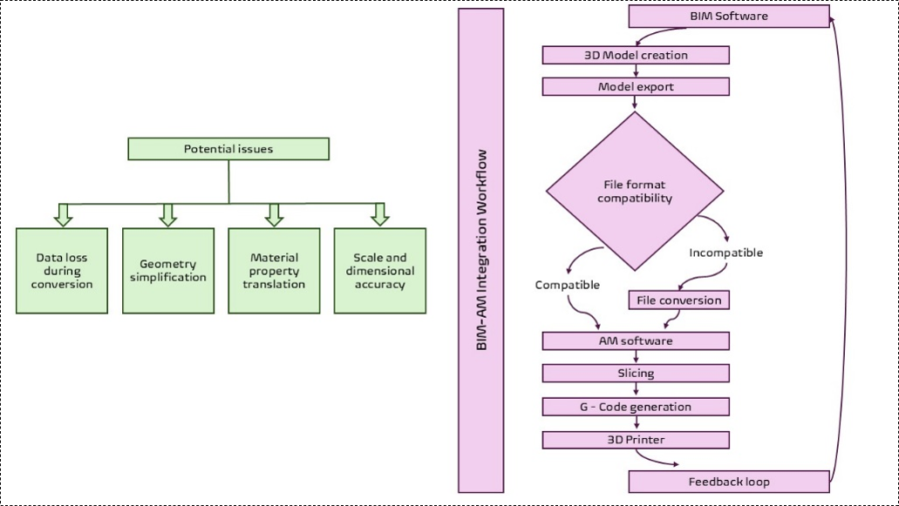
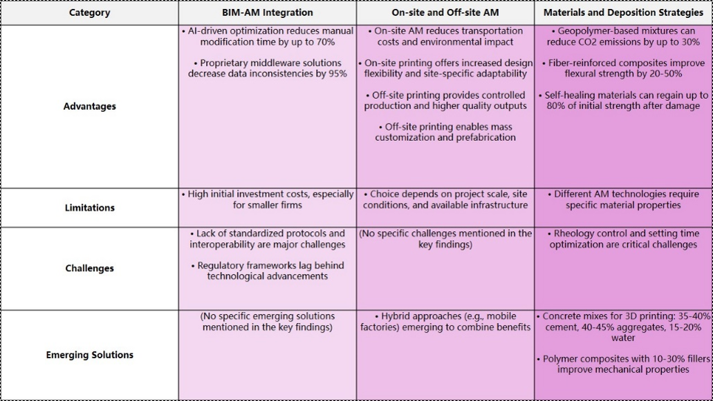

MSC Dissertation Project
Advancing Construction through Additive Manufacturing
Research on how additive manufacturing, supported by BIM and AI, can transform construction through material efficiency, reduced waste, faster workflows, and innovative structural possibilities. Includes comparison of on-site/off-site AM techniques and integration challenges.
BIM-AM Workflow Tools, AI Optimization Software
Aim:
The research aims to investigate and analyze how Additive Manufacturing can revolutionise the construction industry by examining BIM integration, comparing on-site versus off-site techniques, and optimizing material strategies to enhance construction efficiency, sustainability, and innovation.
Methodology
Conducted a comprehensive systematic literature review spanning 2020-2024, employing an Integrated Review Systematic Literature Methodology to evaluate implementation barriers and opportunities in construction-based AM technologies through rigorous inclusion/exclusion criteria and thematic analysis. Demonstrated how AM technologies could transform traditional construction practices by improving efficiency, reducing waste, and enabling complex architectural designs while addressing key challenges in sustainability, workforce shortages, and cost optimization in the building sector.
Key Findings
- BIM-AM integration enhances construction efficiency
- AI-facilitated optimisation decreases manual modification time
- On-site and off-site AM techniques have different strengths
- Printing parameters and material choice impact structural integrity
- Printing parameters and material choice impact structural integrity
Potential Industry Applications
- Development of industry-wide standards for BIM-AM data exchange
- Investment in hybrid AM technologies
- Prioritisation of sustainable, AM-optimised materials
- Implementation of mobile factories for on-site printing
- Integration of AI for optimizing printing parameters
Research topic selection flowchart
Strategies for Overcoming Integration Challenges
Comparison table - off site vs. on site AM techniques
Material and deposition strategies
BIM - AM Integration Workflow
Categorised Key Findings
